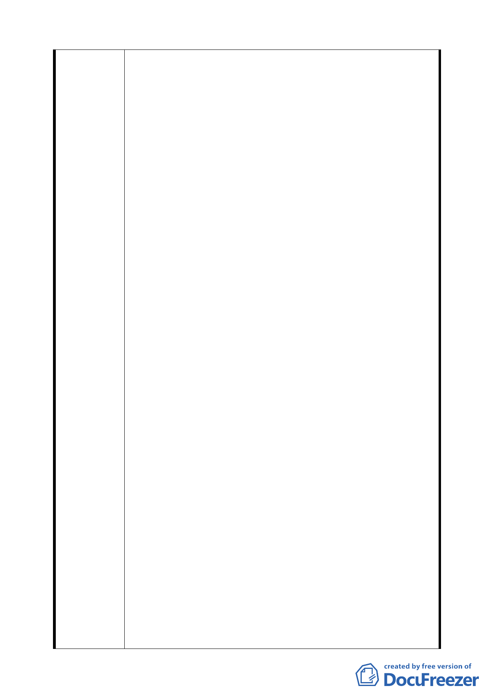

通，臺北車站特定專用區將面臨巨大交通環境轉變，本都
市計畫案雖限定計畫範圍於「C1、D1 東半街廓聯合開發區」
內，惟基地開發後衍生之交通衝擊效應將廣泛影響周遭區
域，區內道路系統、停車供需等規劃方式皆與 C1、D1 開發
後交通容受能力息息相關，不容切割；而計畫區域居於全
國、全市交通樞紐位置，依停車場法第 20 條規定：「．．
在交通密集地區，供公眾使用之建築物，達一定規模足以
產生大量停車需求時，得先由地方主管機關會商當地主管
建築機關及都市計畫主管機關公告，列為應實施交通影響
評估之建築物」。
2.次查旨開計畫書內容，相對於土地使用、容積率之明確界
定，道路系統仍沿襲 82 年頒訂之「擬（修）訂台北車站特
定區細部計畫案」所規劃，依捷運工程局「中正國際機場
聯外捷運系統三重至台北段 DA115 標」設計團隊所作初步
交通影響評估資料，未來 C1、D1 基地開發之容積率為
1200%，其衍生旅次平日為 13.9 萬人/日，假日為 22.8 萬
人/日，再加上高鐵目標年及台北車站上下車人數預測約 16
萬人/日，其衍生汽、機車流量勢必衝擊周邊道路負載能
力，並以 C1、D1 基地南側 10 公尺計畫道路產生最直接影
響，而旨開計畫書主文並未針對未來交通衝擊能量重新定
義該計畫道路寬度，「都市設計管制要點」又未明確規範以
基地退縮等方式作為因應方案，致旨開都市計畫交通規劃
邏輯未能趨於連貫。
3.至於 C1、D1 基地開發所衍生停車空間規劃乙項議題，僅臚
陳意見如次：
（1）依「中正國際機場聯外捷運系統 DA115 標」設計單位所
提送初步交通影響評估內容，未來 C1、D1 基地因其它條
件限制可設置約 400 輛小汽車格，僅達其基地停車需求
量之 16%，或僅達 82 年「擬（修）訂台北車站特定區細
部計畫案」法定停車數之 25%，明顯存在基地開發量體
超越交通限制條件的事實，旨開計畫案由提案單位以「經
本府交通主管機關評定設置停車格數」迴避處理基地停
車格數不足之問題。
（2）本案基地既受限於環境條件之限制而無法提供足夠停車
格數量（法定停車格），本局遂退而要求提案單位應提出
完善交通影響評估分析，希冀借由客觀數據、情境之理
性推估，整體考量周邊環境交通容受能力後，於計畫區
域訂定「合理之停車數量」值，並伴隨細部計畫書公開
展閱，以藉由公共討論審酌其適當性，惟提案單位交通
影響評估工作一再延宕，迄發文日止仍未提送評估報告
二二